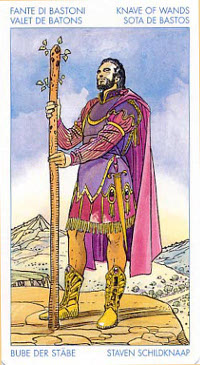

Принцесса Жезлов(Валет)
Прямое положение: не слишком образованный молодой человек, правдивый, возлюбленный, посланник, почтальон.
Значение: Возможно, ребенок; если нет – то молодой человек, пол¬ный энергии, прекрасный любовник. Может быть, танцор, актер, любитель путешествий. Склонен к самолюбова¬нию, так что есть опасность впасть в нарциссизм.
В астрологическом плане - человек, родившийся под одним из огненных знаков (Овен, Лев, Стрелец).
Вестники олицетворяют возможности, открывающиеся нам на жизненном пути. Жезлы - это стихия огня, и шанс, открывающийся здесь, имеет форму какой-либо увлекательной идеи или предложения, принимаемое нами с восторгом. Обычно это возможность выйти за рамки привычной сферы интересов, приглашение к приключению. Это вполне может быть, к примеру, участие в конкурсе, спортивном соревновании, какая-то другая возможность проверить свои силы.
В прямом положении карта обычно указывает на честного человека, лояльно настроенного по отношению к вам и к той группе людей, которую вы, возможно, представляете. Часто это друг, которому вы доверяете или же - незнакомец с дружелюбными намерениями. Этот человек энергичен и всегда добивается того, что ему нужно.
Гадание на ситуацию, в котором выпадает Паж Посохов, может быть истолковано в том смысле, что вы еще не готовы к активным действиям ради осуществления вашего замысла. Стоит подождать некоторое время, после чего можно будет вновь сделать попытку «пробиться к цели».
О благоприятном или же неблагоприятном исходе ваших планов могут рассказать соседние с Принцессой Посохов Арканы. И прежде всего вам надлежит здесь ориентироваться на значение Старшего Аркана - именно он описывает общее положение дел. При положительном характере такого Аркана (например, «Звезда» или «Мир») вы можете рискнуть и взяться за реализацию своего замысла. В противном же случае лучше немного подождать.
Молодой человек с посохом. Олицетворяет собой молодого человека или девушку, не старше 25 лет (Это применительно к Пажам всех мастей!). Как правило симпатичной внешности, склоннный увлекаться, энтузиаст.
Некая новость. Благоприятный договор. Помощь или поддержка от друга моложе вас или родственника(также моложе). Верный друг. Почтальон, иногда иностранец. Также эта карта указывает на получение образования или просто необходимости чему-то научиться. Учить этому других. Заводите новые знакомства, реализуйте новые идеи.
В перевернутом положении – обстоятельства, которые помешают осуществлению благих намерений: болезнь, забастовка транспортников, природные катаклизмы.
Принцесса Посохов в перевернутом положении указывает на растерявшегося и нерешительного человека. Налицо разрыв плавного течения энергетического потока, что может проявляться в виде нарушения процесса общения с другими людьми, а также в виде отсроченных или же отложенных на более поздний срок поездок. В ряде случаев это может приводить к гиперактивности или к нарушениям, связанным с дефицитом внимания.
Если карта обозначает действие:
То, что было задумано, в какой-то момент времени получило неправильный ход и в будущем явно обречено на провал.
Вашим планам, похоже, не суждено стать реальностью, и если им все же и удастся воплотиться, то с результатами очень далекими от желаемого. То же самое касается и ваших надежд на те ли иные процессы, "запущенные" не вами.